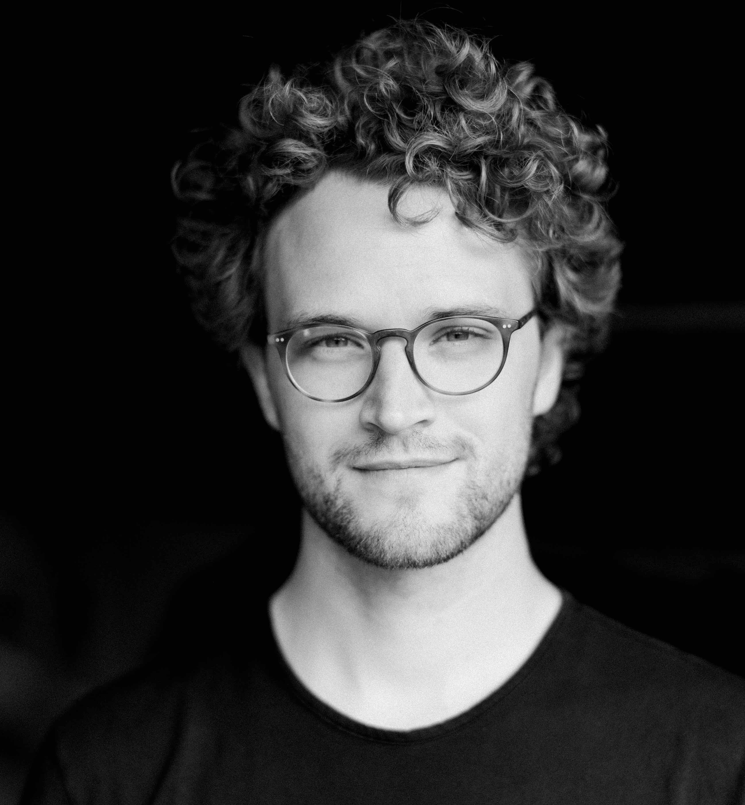

Doug Proctor
Denver, CO
Candid Health (Present)
The fundamental problem impeding a radically more efficient and effective US healthcare system is the friction and complexity of healthcare financial transactions. Healthcare accounts for ~20% of US GDP, and ~15% of that spend is wasted on administrative cruft related to healthcare payments. Candid Health is building a modern revenue cycle automation platform which addresses this problem. Doug is Chief Operating Officer at Candid Health, where he oversees Candid's product, customer and people teams and serves on Candid's Board of Directors.
Insula
Buildings consume 40% of energy produced in the US. 30% of the energy that goes into buildings is wasted because of bad insulation. Meanwhile, there has been little meaningful progress on building insulation technologies in the past 20+ years. Prior to Candid, Doug was co-founder and CEO at Insula, a materials company created to commercialize a building insulation material developed at a US National Lab, which had radical climate and energy impact potential, compelling manufacturing characteristics, and defensible intellectual property. Doug built a motivated, capable team, which ultimately invalidated the core technology. After invalidating the central premise for the business, Insula returned captial to invetors and wound down operations.
Palantir
Prior to Candid and Insula, Doug spent 5+ years at Palantir. He was initially Chief of Staff to the Head of Product and Engineering at a time when Palantir was resetting its entire product stack, which led to the creation of Palantir Foundry. Doug spent significant time in Afghanistan, the broader Middle East and around the world while building and leading several of Palantir's most important teams in the Defense space, including Palantir's global intel and operational support for US Special Operations, rebuilding the Army's core intelligence data systems (DCGS-A CD2), and establishing the Army's central data platform (Army Vantage).
Origins
Doug grew up in Washington, DC. He went to Sidwell Friends School, lived in Beijing, China for two years before college, and graduated from the School of Foreign Service at Georgetown University.
North Star
Doug is fundamentally motivated by learning and by building effective teams which meaningfully impact hard and worthy problems.